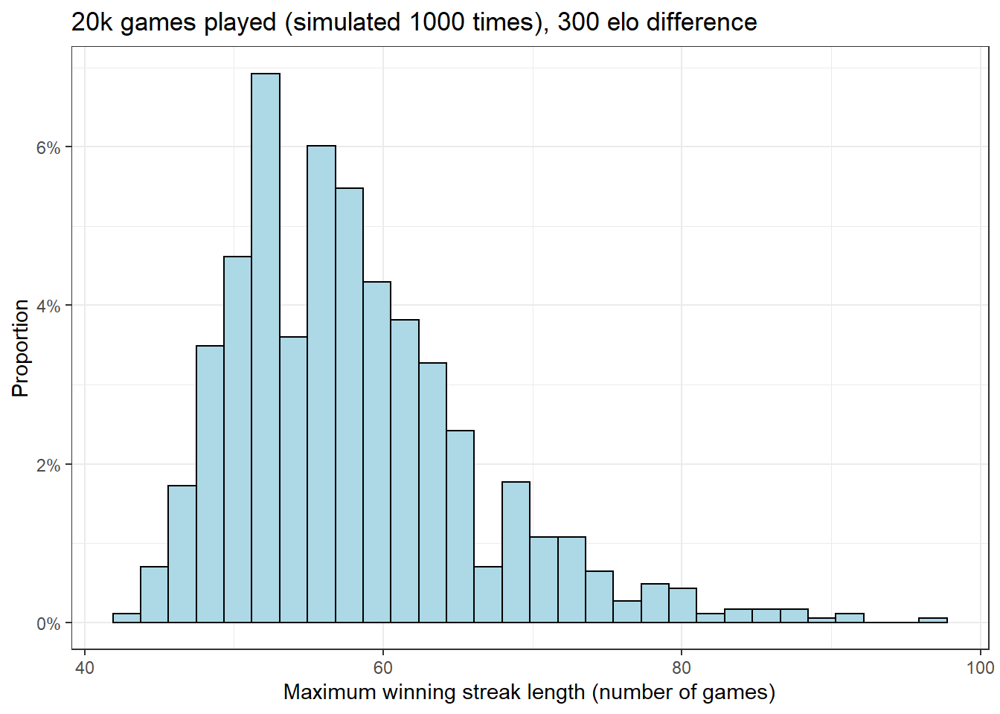

Below is a simple simulation for winning streak lengths when the outcome is either a “win” with 85% probability or a “loss” with 15% probability.
I’m using a streak length of 44 as a “length of interest”. If 50 000 games are played given these probabilities, then the likelihood of not having a winning streak of at least 44 games at least once, is 0.6% (0.006).
Over 50 000 games given the above probabilities for wins and losses, one should on average expect to have 4.961 winning streaks (SD = 2.232143) that are at least 44 games long. Finally, I visualize the distribution of the longest winning streaks for each 1000 simulated set of 50 thousand games. As can be seen in the figure (histogram), even winning streaks of 80+ games are certainly not unheard of, given these parameters.
library(tidyverse)
#Loss = 0, Win = 1
result <- c(0, 1)
#Probability for Loss = 15 %, probability for Win = 85 % (roughly approximating an elo-rating difference of 300)
probability <- c(0.15, 0.85)
#Streak length of interest
streak <- 44
#Number of games played
games <- 50000
#How many times we iterate over the simulation
replicates <- 1000
#Simulate sample of 50000 games such that in each game, we win 85% of the time and lose 15% of the time
#Result: list of 0s and 1s for each game (display first 30)
set.seed(1)
head(sample(result, games, replace=TRUE, prob = probability), 30)## [1] 1 1 1 0 1 0 0 1 1 1 1 1 1 1 1 1 1 0 1 1 0 1 1 1 1 1 1 1 0 1#For these games, calculate the length of each win streak.
#Result: list of winning streak lengths across all 50000 games (display first 30)
set.seed(1)
run_length_all <- rle(sample(result, games, replace=TRUE, prob = probability))
run_length_wins <- run_length_all$lengths[run_length_all$values==1]
run_length_losses <- run_length_all$lengths[run_length_all$values==0] #to be used later (not yet analysed)
head(run_length_wins, 30)## [1] 3 1 10 2 7 22 8 8 5 2 13 9 4 1 9 13 3 10 11 2 7 2 3 2 1
## [26] 3 4 16 2 3#Calculate the number of winning streaks longer than 44
sum(run_length_wins > streak)## [1] 4#Calculate the number of winning streaks longer than 44 1000 times, obtain mean and standard deviation
set.seed(1)
run_length_wins_repl <- replicate(replicates, with(rle(sample(result, games, replace=TRUE, prob = probability)), sum(lengths[values==1] > streak)))
head(run_length_wins_repl, 30)## [1] 4 7 5 3 4 4 2 6 8 8 6 6 5 6 3 5 4 6 4 3 7 4 5 5 5 4 4 2 4 9mean(run_length_wins_repl)## [1] 4.961sd(run_length_wins_repl)## [1] 2.232143#Calculate the number of times there were 0 winning streaks of at least 44 games, express it as a probability
set.seed(1)
sum(run_length_wins_repl == 0) / replicates## [1] 0.006#Histogram showing the distribution of the maximum streak lengths across all simulations
set.seed(1)
chess_data <- tibble(x = replicate(replicates, with(rle(sample(result, games, replace=TRUE, prob = probability)), max(lengths[values==1]))))
chess_data %>% ggplot(aes(x)) +
geom_histogram(aes(y=..density..), color = "black", fill = "lightblue") +
scale_y_continuous(labels = scales::label_percent(accuracy = 1L)) +
labs(y = "Proportion", x = "Maximum winning streak length (number of games)",
title = "50k games played simulated 1000 times, 300 elo difference (15% / 85%") +
theme_bw()